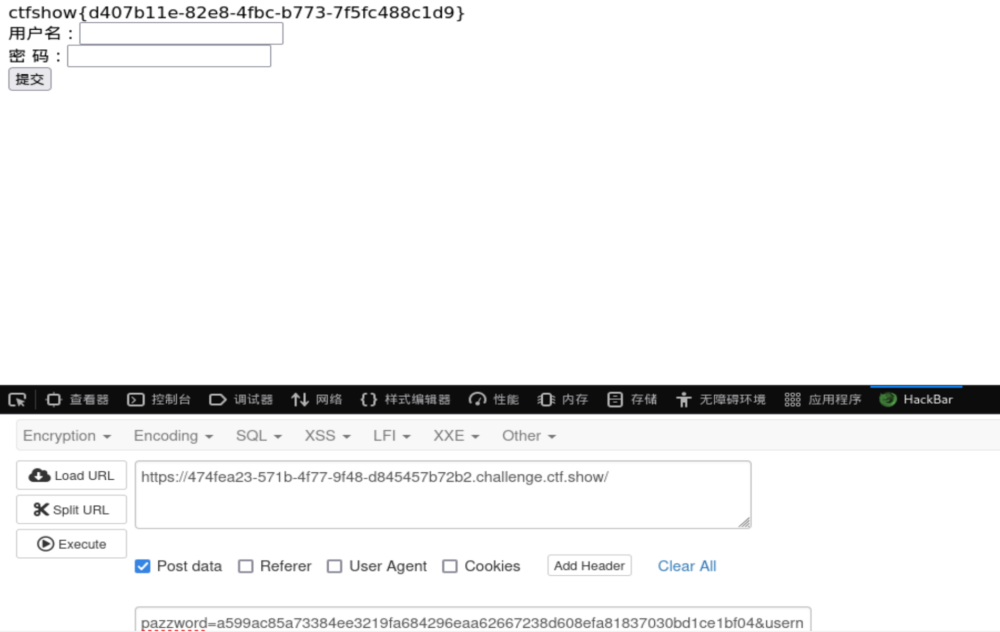

web2：view-source是一种协议，早期基本上每个浏览器都支持这个协议。后来Microsoft考虑安全性，对于WindowsXP pack2以及更高版本以后IE就不再支持此协议。但是这个方法在FireFox和Chrome浏览器都还可以使用。 如果要在IE下查看源代码,只能使用查看中的"查看源代码"命令.以前的使用方法：在浏览器地址栏中输入 view-source: URL
web3:打开burp suite然后在仪表盘选择新扫描输入url（网址）后点击确定，然后点击目标，选择相应–raw就可以看见flag了or F12 —>选择网络—>F5刷新页面，查看响应头。
web4：robots.txt（爬虫协议）
web5：目录扫描：index.phps(php文件)
phps文件泄露，phps存放着php源码,可通过尝试访问/index.phps读取,或者尝试扫描工具扫描读取.
web6：url/www.zip网站备份压缩文件 漏洞成因
在网站的升级和维护过程中，通常需要对网站中的文件进行修改。此时就需要对网站整站或者其中某一页面进行备份。
当备份文件或者修改过程中的缓存文件因为各种原因而被留在网站 web 目录下，而该目录又没有设置访问权限时，便有可能导致备份文件或者编辑器的缓存文件被下载，导致敏感信息泄露，给服务器的安全埋下隐患。
该漏洞的成因主要有是管理员将备份文件放在到 web 服务器可以访问的目录下。
该漏洞往往会导致服务器整站源代码或者部分页面的源代码被下载，利用。源代码中所包含的各类敏感信息，如服务器数据库连接信息，服务器配置信息等会因此而泄露，造成巨大的损失。
被泄露的源代码还可能会被用于代码审计，进一步利用而对整个系统的安全埋下隐患。
.rar .zip .7z .tar.gz .bak .swp .txt
源码泄露 url/www.zip 得知隐藏目录/fl000g.txt
web7: dirsearch -u url 发现目录 /.git
web8 /.svn 代码版本管理工具
web9: 本题目的是让答题者了解到vim编辑器使用时会有一个缓存文件，这个缓存文件在保存时进行删除，但是在vim意外退出时这个缓存文件，会以源文件加一个.swp后缀进行保存，我们可以尝试访问这些文件来尝试获取一些文件。
/index.php.swp
web10:network cookie
本题目是让答题者了解到cookie，cookie一般用于在身份认证的过程中保存一些信息，用于服务器来验证身份,在测试中可以尝试注入等方式。可以使用burp/F12中的网络来查看
web11:dns查找域名
web12:查看robots.txt文件，用户名admin。密码：在页面的最下方 管理员界面：/admin
web13:/document.pdf，底部信息
本题目的是答题者了解到很多的文章有许多的文档，可以在这些文档中发现很多信息，例如文件中有许多的信息泄露的地方，本题在底部的document这个这个文本中记录到有地址和密码。
web14:根据提示 泄露重要(editor)的信息 直接在url后面添加/editor 然后查看flag路径并且访问
web15:/admin 忘记密码，密保问题。首先，在网页最下方发现一个邮箱，于是就去QQ上搜索了一下QQ号，只是发现了一个账号，地点是陕西西安，社工搜索，telegram暗精灵
web16:考察PHP探针php探针是用来探测空间、服务器运行状况和PHP信息用的，探针可以实时查看服务器硬盘资源、内存占用、网卡 流量、系统负载、服务器时间等信息。 url后缀名添加/tz.php 版本是雅黑PHP探针，然后查看phpinfo搜索flag
web17:/backup.sql 备份的sql文件
web18:这是一个javascript 的游戏，游戏的目的就是让要赢，从js代码中可知，当score>120时，且game_over这个参数为false时，即可赢，于是打开开发者模式中的console，直接赋值score=130 game_over=false 然后，执行游戏 的run() 即可得到 “你赢了，去幺幺零点皮爱吃皮看看”， 即，110.php 打开它，即得flag
web19:js查看源码，得知post提交账户密码，用hackbar

web20：mdb文件是早期asp+access构架的数据库文件 直接查看url路径添加/db/db.mdb 下载文件通过txt打开或者通过EasyAccess.exe打开搜索flag flag{ctfshow_old_database}
web89
isset()用于检查$_GET['num']是否存在。如果变量存在且值不为NULL，则返回true，否则返回false。preg_match()用于检查$_GET['num']是否包含数字字符。如果模式匹配到，则返回1，否则返回0。intval()用于将$_GET['num']转换为整数并检查其是否为非零值。返回变量的整数值
利用数组绕过正则表达式，?num[]=1
web90
绕过十进制，我采用转换成16进制方法，?num=0x117c
web91
正则表达式修饰符
/^php$/im
/^php$/：匹配字符串 “php”。i：忽略大小写。m：多行匹配，若存在换行\n且有开始^或结束$，以换行为分隔符，逐行匹配
%0A` 表示换行符（`\n
payload：?cmd=%0aphp
web92
方法一:intval()函数如果$base为0则$var中存在字母的话遇到字母就停止读取 但是e这个字母比较特殊，可以在PHP中不是科学计数法。所以为了绕过前面的==4476我们就可以构造 4476e123 其实不需要是e其他的字母也可以
方法二:同web90
web93
既然不能有字母，传换成八进制，?num=010574
web94
在93的基础上过滤了开头为0的数字 这样的话就不能使用进制转换来进行操作 我们可以使用小数点来进行操作。这样通过intval()函数就可以变为int类型的4476 ?num=4476.0
if(!strpos($num, "0"))//0不能放在第一位
web95
if(preg_match("/[a-z]|\./i", $num))//点匹配没了
可以通过8进制绕过但是前面必须多加一个字节 ?num=+010574或者?num=%2b010574
web96
在linux下面表示当前目录是 ./ 所以我们的payload： u=./flag.php
不能直接?u=flag.php会被过滤
web97（这题不太懂其实）
md5绕过原理：md5对数组是不予加密的，但是这个函数是返回值类型的，没有返回对象，便是返回null（null是无对象的意思，可以理解为没有目标）,所以两个都是null，可以绕过里面的比较，但是外面还有一个a!=b,绕过姿势为：?a[]=1&b[]=2
web98
三元运算符，if使用
(expr1)?(expr2)：(expr3)
如果expr1成立，则执行expr2，否则执行expr3
$_GET=&$_POST;//只要有输入的get参数就将get方法改变为post方法
我们只需要 GET一个?HTTP_FLAG=flag 加 POST一个HTTP_FLAG=flag,get直接url？，post用hackbar
web99
file_put_contents()写入文件
弱类型中当php字符串和int比较时,字符串会被转换成int，所以 字符串中数字后面的字符串会被忽略。题目中的in_array没有设置type,我们可以输入字符串5.php(此处数字随意，只要在rand(1,0x36d)之间即可),转换之后也就是5,明显是在题目中生成的数组中的,满足条件，同时进入下一步后，我们就可将一句话木马写入了5.php中
get:?n=5.php post:content=
查看post:content= ,查看flag：content=
web100
三个参数 v1 ，v2 ，v3，其中v0 实际上只会去判断v1是否为数字 ，因此v1 = 1234 数字即可
if($v0){
if(!preg_match("/\;/", $v2)){ # 表示v2中不能有符号 ；
if(preg_match("/\;/", $v3)){ #表示v3 中必须要有 ;
eval("$v2('ctfshow')$v3"); # 这里是eval中 拼接v2 v3
}
}
}
v2=var_dump($ctfshow)/*
v3=*/;
拼接起来就是var_dump($ctfshow)/ (‘ctfshow’) / ; 可以执行
v2 也可以用其他显示输出的函数
v2=print_r($ctfshow)/*&v3=*/;
注意拼接之后要把v3注释掉，flag要把02xd换成-